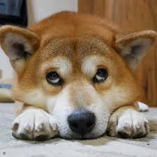
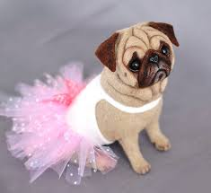
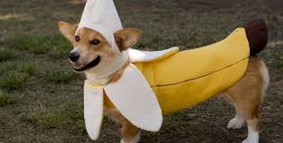
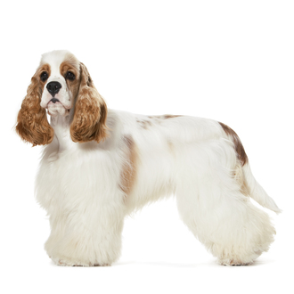
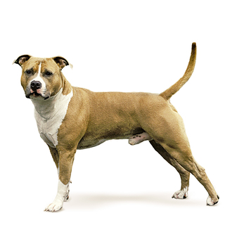
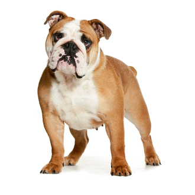

mou cobachki
Эта красивая, хорошо сложенная собака пока не слишком часто встречается в России. Родиной австралийских овчарок, несмотря на название, является не Австралия, а США. И если там их по-прежнему часто используют в сельском хозяйстве, то во всем мире это чаще собака-компаньон. Аусси (или осси), как еще называют эту овчарку – ласковая, дружелюбная, привязанная к человеку собака. Тем не менее, при должной подготовке с успехом может выполнять и обязанности служебной и охранной.)
Любящая и сдержанная – вот два определения, лучше всего характеризующие характер акита-ину. Эти собаки не очень активны, но нуждаются в ежедневной физической нагрузке. С акитой нужно гулять от 30 минут до часа в день. Они не толерантны к другим собакам, поэтому занятия на собачьей площадке не рекомендуются. Акита должен всегда быть в доме один – он агрессивен к собакам и будет охотиться на других домашних животных. Впрочем, хорошо воспитанная акита терпима к своим сородичам, но будет любыми способами добиваться превосходства, ибо по природе она склонна к доминированию. На всю жизнь остается преданной одному владельцу.
В любом описании породы аляскинских маламутов говорится о крупных собаках, крепко сложенных, с глубокой грудью и сильным, мускулистым телом. В стойке они крепко опираются на все подушечки лап, голову при этом поднимают довольно высоко. Производят впечатление энергичных собак. Взгляд внимательный, выражает интерес и любопытство. Если животное насторожено, кончики его треугольных ушей направлены в стороны. Массивная морда – не вытянутая, не заостренная, но и не тупая, немного сужается к мочке носа. У маламутов густая шерсть с достаточно длинным и грубым покровным волосом, защищающим плотный пушистый подшерсток. Существуют различные варианты окраса. Отметины на морде образуют характерный рисунок. На голове может быть «шапочка», морда полностью белая либо со светлой проточиной и/или маской. Хвост хорошо опушен, поднят над спиной, производит впечатление развевающегося плюмажа. Крепкий костяк, сильные ноги, сводистые и плотные лапы, глубокая грудь, мощные плечи – все это позволяет собаке эффективно выполнять свою работу. Движения аляскинских маламутов должны быть ровными, сбалансированными, легкими и очень энергичными.
ОПИСАНИЕ Эталон собаки-компаньона Спокойный от природы и без малейшего намека на робость, американский кокер-спаниель стал эталоном собаки-компаньона. Забавные проделки этого спаниеля-экстраверта приводят в восторг и взрослых, и детей, а компактные размеры позволяют повсюду брать его с собой. ХАРАКТЕР Очень любит активные игры и отлично относится к детям Главная особенность характера собаки породы американский кокер-спаниель – его добродушие. Кроме того, он отлично чувствует настроение владельца: всегда готов развеселить его в минуты грусти и не будет досаждать, если тот занят своими делами. Этот пес очень любит активные игры, отлично относится к детям, не агрессивен к людям и к другим животным. Он послушен и легко поддается дрессировке. Такие характеристики породы делают американского кокер-спаниеля идеальной семейной собакой.
ОПИСАНИЕ Сочетание лучших качеств терьера и бульдога Американский стаффордширский терьер чрезвычайно удачно сочетает в себе характеристики двух пород, от которых был выведен: терьера и бульдога. Он унаследовал живость первого и спокойную силу второго. Вот почему этот ангел в представлении одних и демон по убеждению других стал самым прославленным представителем североамериканских пород. Это сильная, смелая, уверенная в себе собака, преданная семье, в которой живет. ХАРАКТЕР Хорошо поддаются дрессировке, но их нельзя ни к чему принуждать Характер американского стаффордширского терьера сочетает в себе абсолютно противоположные качества: силу и благодушие, бесстрашие и чувствительность. Эти животные хорошо поддаются дрессировке, но их нельзя ни к чему принуждать. В описании породы часто упоминается одна особенность характера амстаффа – борьба за лидерство. Но важно знать, что попытки доминировать нужно немедленно пресекать. В тоже время американские саффордширские терьеры очень любят играть, причем как со взрослыми, так и с детьми.
ОПИСАНИЕ Довольно широкие и низкорослые, с плотным телосложением Английский бульдог – одна из старейших пород собак, выведенная в процессе селекции. Представители данной породы – активные, сильные и решительные животные. У них плотное телосложение, они довольно широкие и низкорослые. Голова у собаки породы английский бульдог очень крупная, но пропорциональна телосложению, морда короткая и широкая, слегка вздернутая. У него короткое, крепко сбитое туловище, не склонное к ожирению. Конечности крепкие, мускулистые, очень сильные. Суки хорошо развиты, но менее представительные, чем кобели. В целом собаку породы английский бульдог можно описать как мощную, но компактную. Несмотря на кажущуюся неповоротливость, она может быть весьма энергичной и быстрой. Эта порода относится к гладкошерстным. Содержать английского бульдога можно как в загородном доме, так и в квартире, они не требуют особенного ухода. Но стоит хорошо подумать прежде чем завести такого щенка, так как этой породе свойственны многие наследственные заболевания. ХАРАКТЕР Отличаются спокойным, даже флегматичным характером, хотя иногда проявляют упрямство и своенравие Энергичность, смелость, верность, надежность и бесстрашие – основные характеристики собаки породы английский бульдог. За ее свирепым внешним видом скрывается исключительно любящая, ласковая и преданная натура. Английские бульдоги хорошо относятся к детям, они отличаются спокойным, даже флегматичным характером, хотя иногда проявляют упрямство и своенравие. Поэтому воспитание этой собаки не стоит пускать на самотек.
